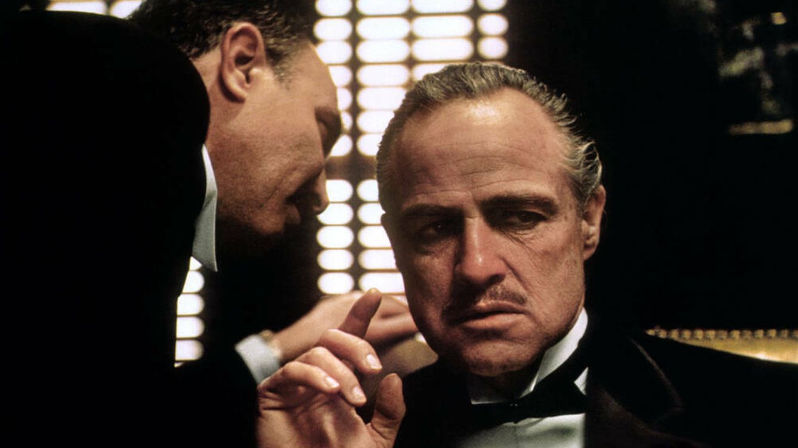

2001 Una odisea en el espacio

Una de las más recordadas e innovadoras cintas de aventuras. Efectos especiales nunca antes vistos, personajes memorables, escenas que te tendrán arañando los apoyabrazos.
Casablanca
Si bien la historia y las actuaciones no son de lo mejor, indudablemente otro antes y después en lo que a animación por computadora se refiere. James Cameron creó una película pero en verdad imaginó un mundo nuevo.
El ciudadano

La que comenzó la saga. Terror claustrofóbico, peligros al acecho, el espacio nunca fue un lugar tan hostil como con Alien, el octavo pasajero.
El mago de Oz

Poco se puede decir de esta película y sus secuales sin caer en lugares obvios. Solamente destacaremos que la música nunca fue tan relevante y que todos queremos ser un Jedi.
El padrino
Fresca película de terror, suspenso y alguna que otra risa. James Wan, como escritor, vuelve a deleitarnos con su ingenio para asustar y divertir.
King Kong

Interesante pero poco recordada obra del gran Tim Burton, con todas sus excentricidades pero no tantos lugares comunes. Una obra que festeja el cine camp de los 50.
Lo que el viento se llevo
Suspenso al máximo, con actores que se ven humanos como lo que a veces somos, enfrascados en una lucha a muerte contra la naturaleza.
Nosferatu

En el grupo de aquellas películas que podemos dejar de fondo y seguir la acción mientras oímos los diálogos. Casi como un legado para nuestros hijos.
Psicosis
Más Spielberg porque, por qué no? Otra de sus magistrales obras. Una historia con emoción, diversión, aventura, y principalmente corazón.
Tiempos modernos
No será la peli más memorable de la lista pero sin dudas es de las más vistosas, hermosamente filmada y actuada. Un mundo utópico a tener en cuenta.